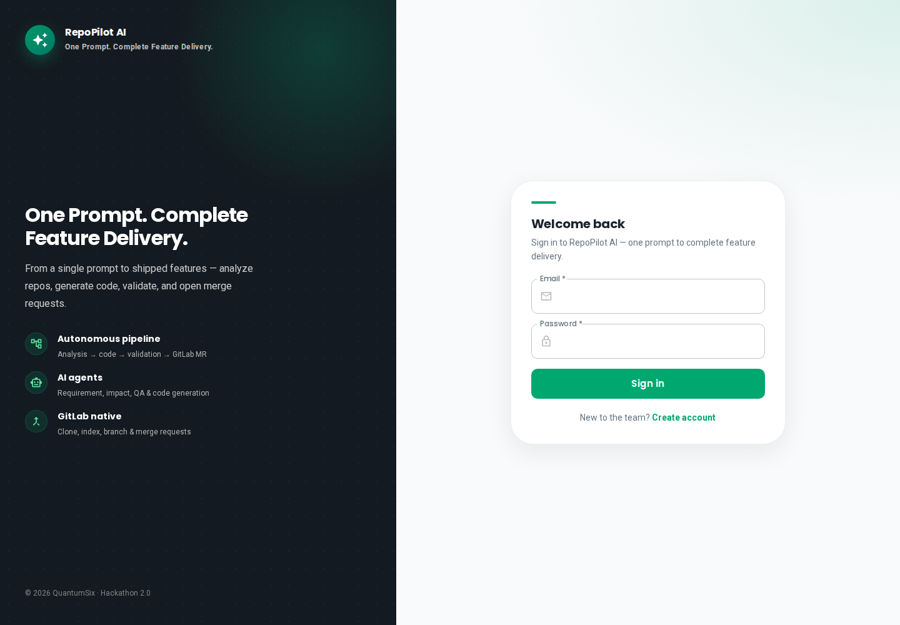
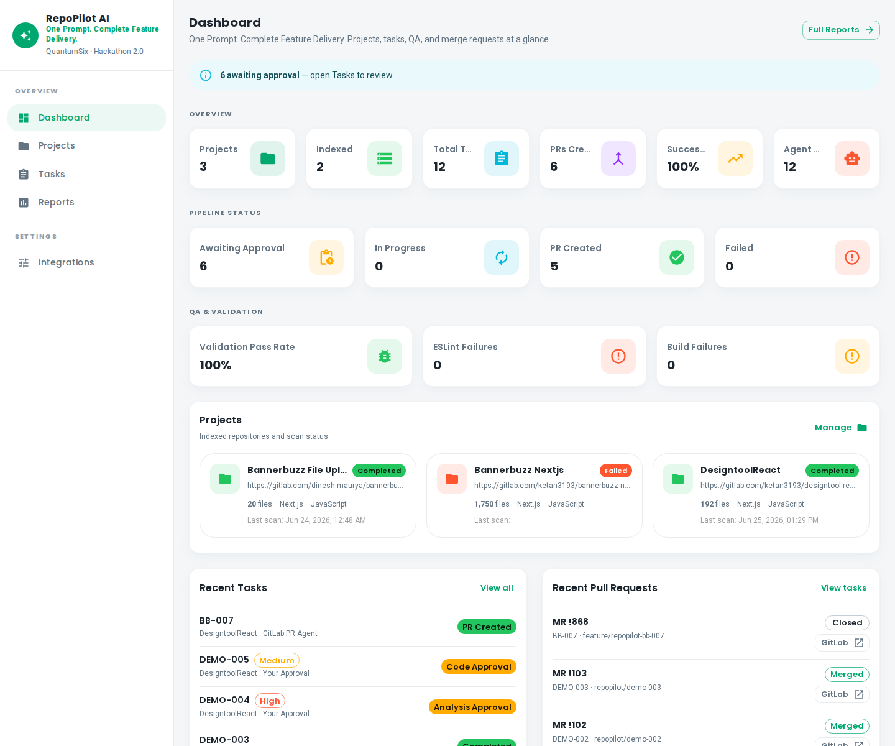
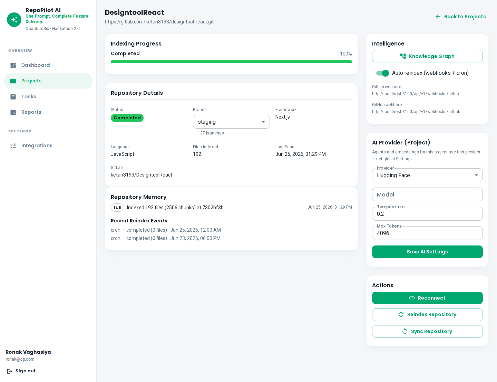
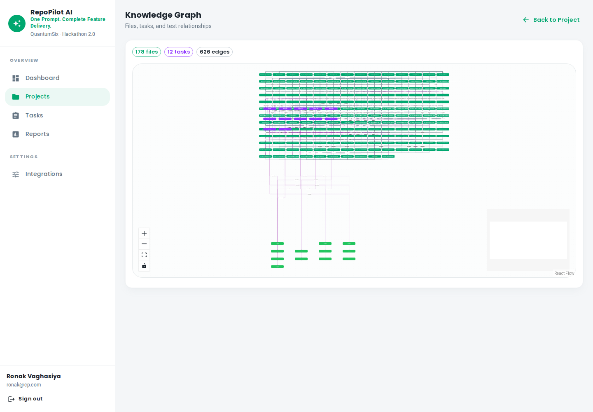
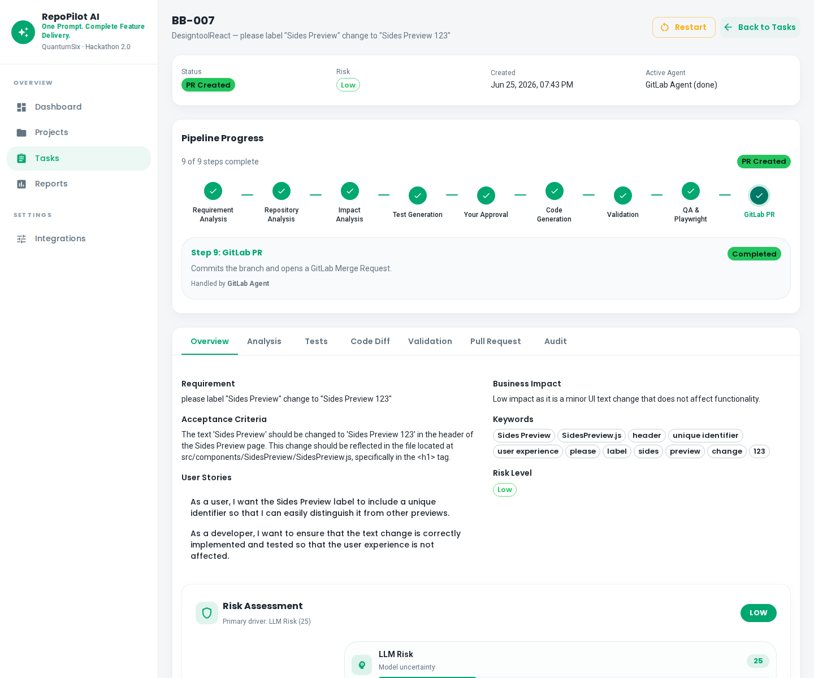
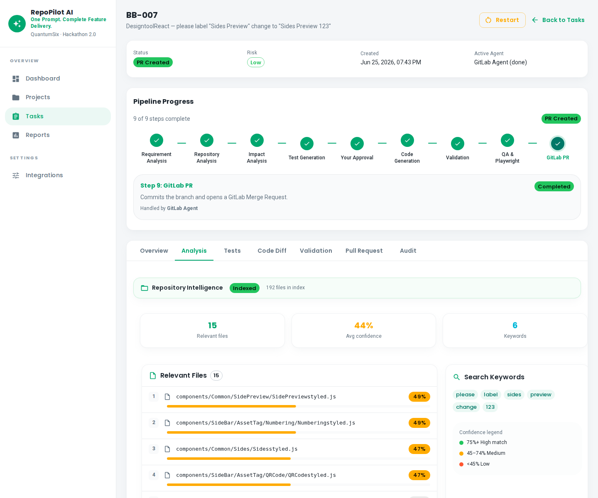
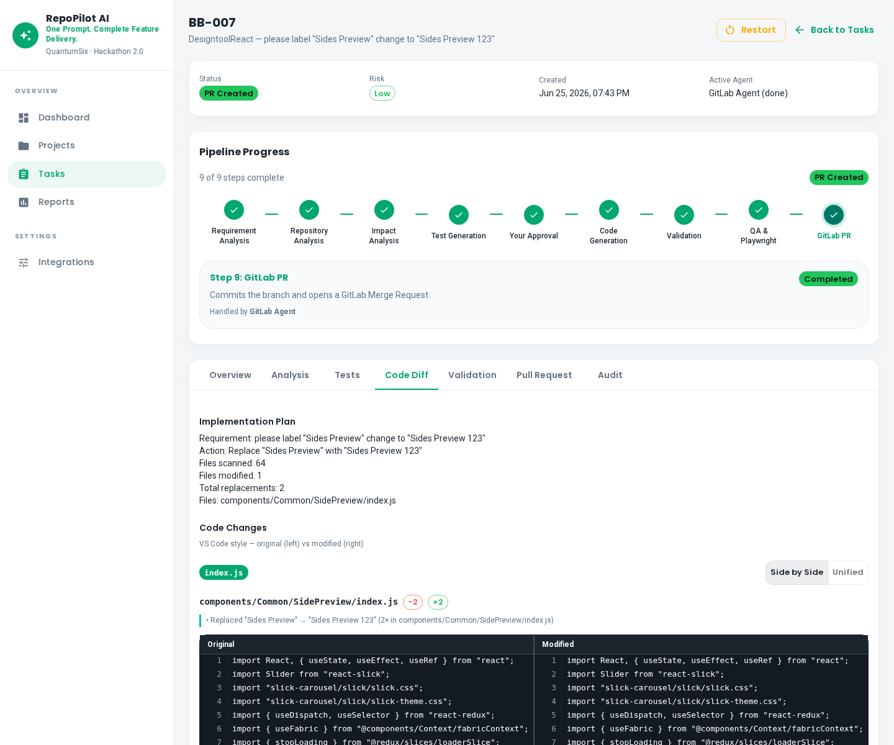
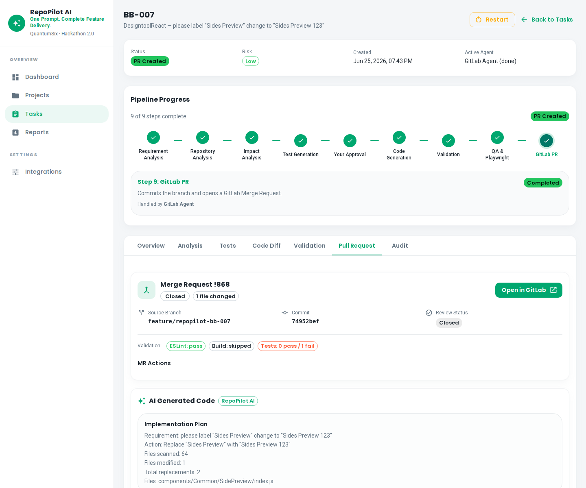
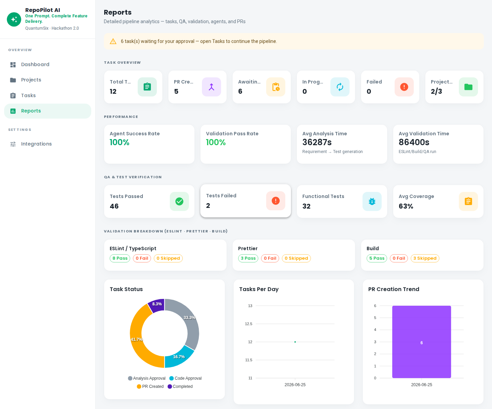
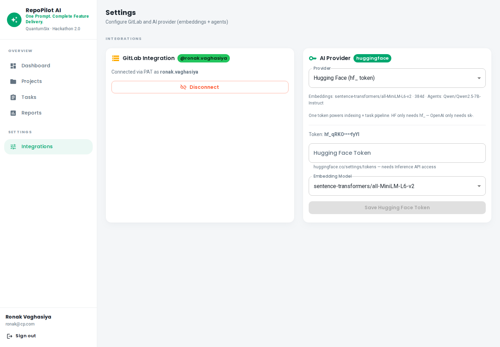

Step 1 · Access
Secure team login
JWT auth for the whole team — same flow on Windows & Ubuntu. Register once, collaborate instantly.
- Email + password authentication
- Protected routes across the platform
- Light / dark mode from day one
← → navigate · F fullscreen
One Prompt. Complete Feature Delivery.
From natural language to analysed code, validated changes, and GitLab merge requests.
Built by QuantumSix
Devs spend hours on analysis, boilerplate, and MR prep before real coding starts.
Requirements, code, tests, and reviews live in different tools with no single flow.
AI tools don't know your repo — generic suggestions miss architecture and patterns.
RepoPilot indexes your GitLab repo, understands the codebase, then runs autonomous AI agents — with human approval gates at every critical step.
Clone & index GitLab repo into Qdrant embeddings
Upload CSV or create task with a feature request
User stories, impacted files, risk assessment
AI writes code diffs you review & approve
Validation, tests, GitLab MR — done
JWT auth for the whole team — same flow on Windows & Ubuntu. Register once, collaborate instantly.

Everything at a glance — projects, active tasks, merge requests, and live indexing status.

Link real repositories — RepoPilot clones, parses files, and builds a searchable knowledge base.

Visual map of files, modules, and relationships — AI agents use this context for accurate, repo-aware output.

Upload a CSV batch or create tasks manually — each runs an autonomous multi-agent workflow.

The AI reads your prompt against indexed repo knowledge and produces structured deliverables.

Review every diff file-by-file. Nothing merges without your explicit approval.

Automated validation, QA checks, and direct GitLab MR creation — feature delivery end-to-end.

Leadership view — task breakdowns, agent activity, QA summaries, and delivery metrics.

Wire up GitLab OAuth, choose OpenAI or Hugging Face, and manage API keys securely.

Next.js 14 · React · MUI · TypeScript · Light/Dark theme
NestJS · PostgreSQL · JWT Auth · REST API · GitLab SDK
Qdrant vectors · HF Embeddings · OpenAI / HF LLMs · n8n agents
Cross-platform Node scripts · Windows + Ubuntu · No Docker required locally
JWT guards · Encrypted API keys · Approval gates · Audit logs
Automated screen recording · Indian English TTS · Word-synced subtitles
One Prompt. Complete Feature Delivery.
Ask us anything — live demo ready.
Demo: demo@quantumsix.dev · localhost:3100